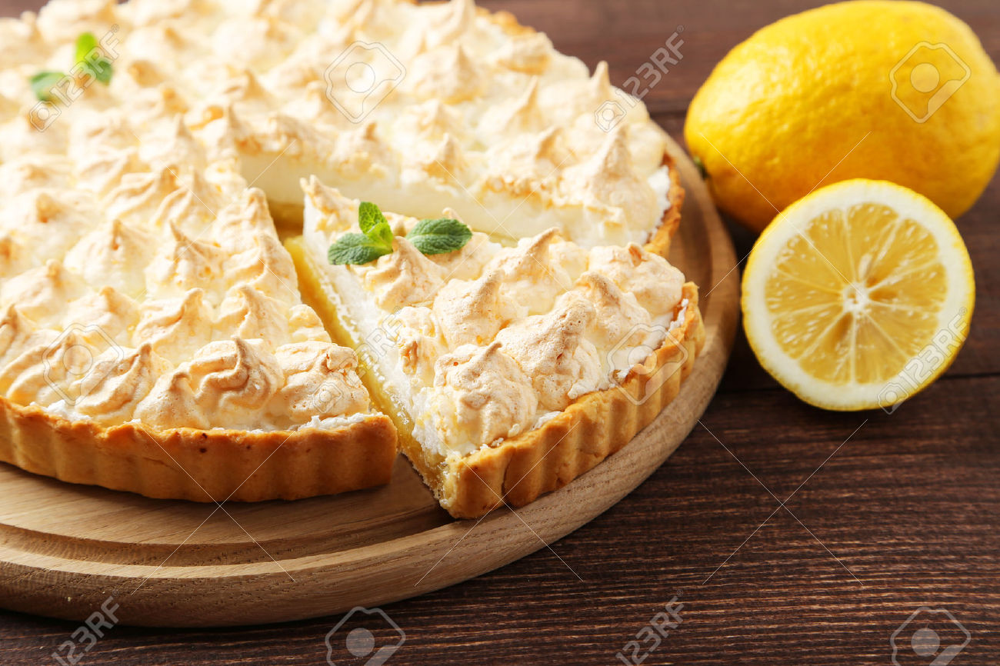

Worlds Healthiest Recipe
Mamas Homemade Lemon Meringue Pie

Prep Time
30 m
Cook Time
10 m
Total Time
40 m
Total
8 Servings
Ingredients
- 1 cup White Sugar
- 2 Tablespoons All-purpose flour
- 3 Tablespoons Cornstarch
- 1/4 teaspoon salt
- 11/2 cups water
- 2 lemons, juiced and zested
- 2 tablespoons butter
- 4 egg yolks, beaten
- 1 (9 inch) pie crust, baked
- 4 egg whites
- 6 tablespoons white sugar
Directions
- Preheat Oven: Preheat Oven to 350 degrees F (175 Degrees C)
- Make lemon filling:In a medium saucepan ...
- Whisk together 1 cup, flour, conrstach and salt.
- Stir in water, lemon juice and lemon zest
- Cook over medium-high heat, stirring frequently, until mixture comes to a boil.
- Place egg yolks in a small bowl and gradually which in 1/2 cup of hot sugar mixture
- Whish egg yolk mixture back into remaining sugar mixture.
- Bring to a boil and continue to cook while stirring constantly until thick
- Remove from heat.
- Pour filling into baked pastry shell.
- Make Merigue: In a large glass or metal bowl ..
- Whip egg whites until foamy
- Add sugar graudally, and continue to whip until stiff peaks form
- Spread merigue over pie, sealing the edges at the crust
- Bake: Bake in preheated oven for 10 minutes, or until merigue is golden brown.